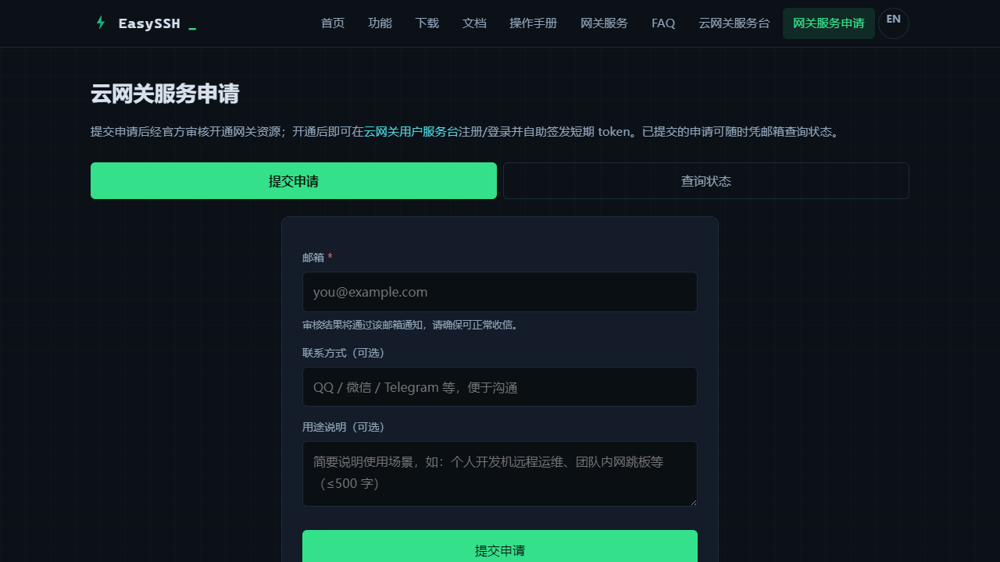
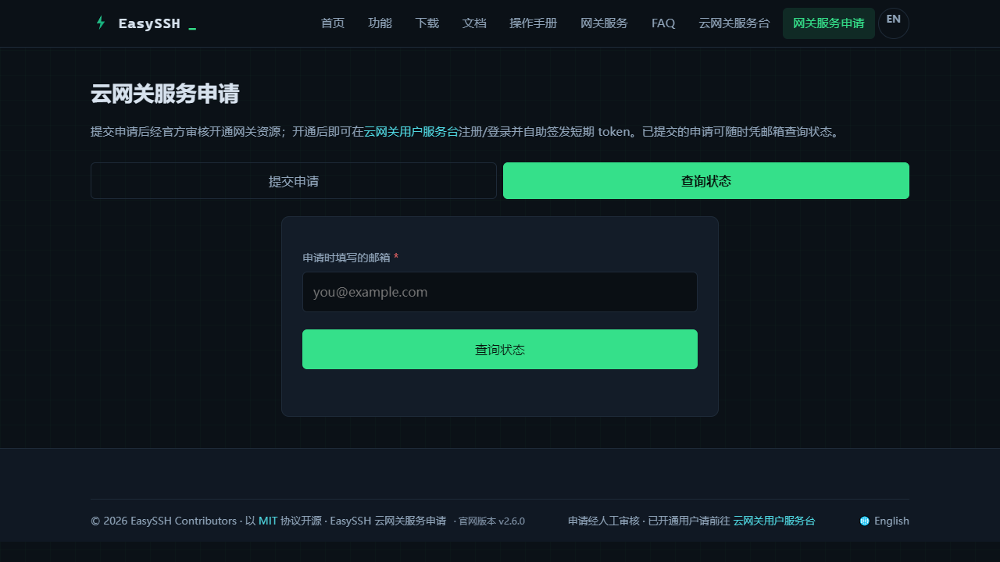
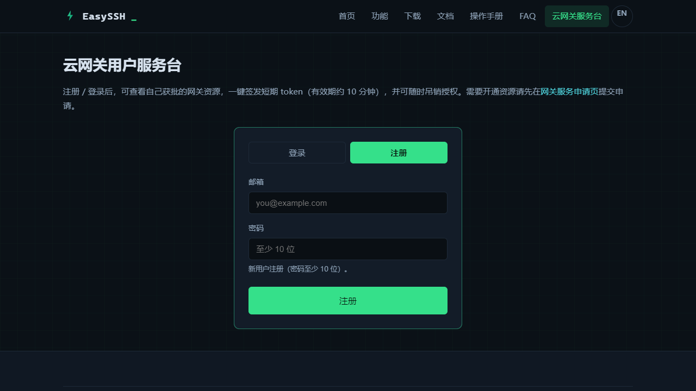
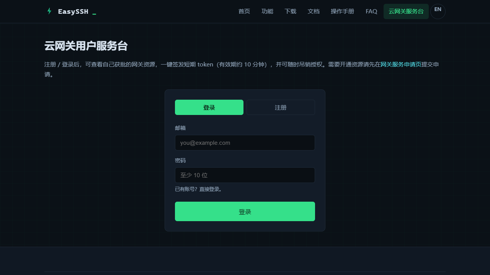

网关接入 （云网关 · WSS 隧道）
口径说明：自建网关（easyssh-gateway）已可独立部署；官方托管云网关与用户自助管理台随本版本上线。本页全文按此口径描述，不再区分「将来时」。
什么是网关
网关让你只出站访问网关的 443 端口，由网关经 WSS（TLS 加密 WebSocket）隧道转发 SSH 流量，内网 SSH 主机无需向外暴露 22 端口。客户端 ↔ 网关之间是公网上的 WSS 长连接，网关 ↔ 内网主机之间是私网内的普通 SSH 连接；两端协议语义一致但不绑定，EasySSH 与自建 easyssh-gateway 均为独立实现、独立部署。
官方托管云网关申请流程
- 在官网「网关服务」申请页（apply.html）提交申请：填写组织信息、预计接入的资源数量与联系人；
- 后台审核通过后，管理员为你开通网关账号与资源授权；
- 收到下发的「开通交付 4 项」（见下节）即可按「客户端使用步骤」接入。
企业内网也可跳过申请，直接用开源的 easyssh-gateway 自建网关（部署套件随源码仓库发布，见下载页），再在网关后台自行注册 [[resources]] SSH 后端。部署套件（deploy-gateway/）已包含本页所述的完整 Web 服务台：申请页 / 用户服务台（gw-admin.html）/ api 接口 / 每天 10:00 和 16:00 两次人工或 AI 定时审核任务（双结果邮件通知），一条命令安装（install-webconsole.sh），安装与安全口径详见套件内 README.md——自建网关同样具备本页描述的程序性强制关联流程。
申请页（apply.html）与自助管理台（gw-admin.html）的关系
这两个页面是云网关使用生命周期中前后衔接、职责不同的两个入口，不要混用：
| 申请页 apply.html | 自助管理台 gw-admin.html | |
|---|---|---|
| 解决什么问题 | 「我还没有被授权」——申请开通云网关资源 | 「我已经被授权，要日常使用」——自助签发短期 Token、查看我的资源、吊销授权 |
| 账号体系 | 不注册账号，只留邮箱（用于审核结果通知与资源归属） | 需注册管理台账号（邮箱 + 密码，密码 10–128 位，独立会话 Cookie） |
| 邮箱要求（关键） | 提交时填的邮箱即「申请邮箱」 | 必须与申请 云网关服务（https://easyssh.cn/apply.html）时的申请邮箱完全一致——不一致则登录后「我的资源」为空，看不到任何已开通资源 |
| 谁在操作 | 你提交 → 管理员人工审核 → 开通资源授权 | 完全自助，不需要管理员介入 |
| 操作频率 | 每个组织 / 每批资源通常只申请一次 | 日常高频：每次连接前签发短期 Token 即可 |
| 安全定位 | 审核制准入，防止资源被滥用 | Token 短期有效（约 10 分钟）、服务端内网签发、可随时吊销，日常使用零长期凭据 |
邮箱绑定（全自动）：申请在登录态内提交，申请邮箱即账号邮箱，无第二个需要人工对齐的邮箱；历史遗留的「两邮箱不一致」问题从流程上被消除。资源授权仍按账号邮箱归属，管理员开通后资源自动出现在服务台「我的资源」。
完整流程（含截图，逐步）
第 1 步：注册服务台账号。打开云网关用户服务台「注册」标签：邮箱 + 密码（10–128 位）完成注册。此账号即云网关服务主账号，后续申请、签发 Token 均绑定它。

第 2 步：登录并自动判定。登录服务台后，系统第一步自动检查账号邮箱的申请状态：未申请 → 显示登录态保护的云网关服务申请页（联系方式选填、用途说明必填 ≥10 字，提交即绑定账号邮箱并收到受理确认邮件）；审核中 → 显示等待页（每天 10:00 和 16:00 人工或 AI 定时审核，结果邮件通知，可随时手动刷新状态）。

第 3 步：等待审核结果（邮件通知）。每天 10:00 和 16:00（北京时间）人工或 AI 定时审核受理，通过与否均邮件通知（发送至账号邮箱）；也可在服务台「刷新审核状态」手动查看。审核通过后刷新页面即自动进入服务台内页。

第 4 步：进入服务台内页「我的资源」。审核通过后（登录状态下刷新页面自动进入，或重新登录），即可看到管理员授权给你的 resource_id 列表——这就是「开通交付 4 项」中的资源 ID，后续客户端配置直接照抄。

第 5 步：自助签发短期 Token 并接入客户端。在「我的资源」中选择资源点「签发 Token」，管理台经服务器内网回环调用网关签发 role=user 的真实 JWT（约 10 分钟有效）；把返回的 Token 粘贴到 EasySSH 连接表单「网关（可选）」折叠区的 Token 框（认证方式选 Token），资源 ID 填「我的资源」里的同名值，即可按上方「客户端使用步骤」连接。Token 过期后回管理台重新签发一次即可，无需改任何配置。
第 6 步（可选）：吊销授权。不再使用某资源时在管理台点「吊销」：本地立即停止自助签发，已签发 Token 将在 10 分钟内自然过期；如需立即封禁请联系管理员在网关策略矩阵处理。
开通后交付的 4 项
- 网关地址：
easyssh.cn:443（TLS 启用，WSS 通道）； - 认证方式：Token（JWT）/ 用户名密码 / inherit（跟随连接），按管理员分配的口径选择；
- 凭据：网关 Token 或用户名密码（初始凭据请首次登录后尽快在自助管理台更换）；
- 资源 ID（
resource_id）：网关侧注册的 SSH 后端标识（如ssh-intranet-01），连接时据此路由到目标内网主机。
客户端使用步骤
- 「＋ 新建连接」或编辑已有连接，填好主机 / 端口 / 凭据（此处填内网真实地址，网关会按资源 ID 路由）；
- 在连接表单中展开「网关（可选）」折叠区（普通直连无需展开）；
- 网关地址填
easyssh.cn（支持直接粘贴https://easyssh.cn:443完整地址，域名 / 端口 / TLS 自动拆分识别），端口 443，TLS 选「启用」； - 按交付口径选择认证方式：Token（JWT）直填短期令牌；用户名密码由客户端向网关换取短期票据，密码仅保存在本机（Windows 下经 DPAPI 加密存储）；inherit 沿用该连接的服务器凭据；
- 填写交付给你的「资源 ID」（如
ssh-intranet-01）； - 点「检测网关连通性」确认节点绿色后再连接；
- （可选）「＋ 添加备用网关」，主网关不可达时按列表顺序故障转移（fallback）；
- （可选）网关开启 OTP 后，连接时会弹出「网关要求 OTP 二次认证」输入框，输入 6 位动态码即可续连，无需改配置。
网关折叠区参数表
| 参数 | 说明 |
|---|---|
| 网关地址（hostname） | 域名或 IP，支持粘贴完整 https://gw.example.com:8443 自动拆分 |
| 网关端口（port） | 1–65535，官方云网关为 443 |
| TLS（use_tls） | 公网网关必开（WSS 通道） |
| 允许自签证书（allow_self_signed） | 跳过证书校验，仅限内网自签网关，公网网关严禁勾选 |
| 认证方式（auth） | Token（JWT）/ 用户名密码 / inherit（跟随连接） |
| 网关 Token / 用户名 / 密码 | 按所选认证方式填写；已保存凭据不回显明文（placeholder 提示「已保存（留空保持不变）」） |
| 资源 ID（resource_id） | 网关后台注册的资源名；留空则按本连接的服务器地址直连（受网关私网白名单约束） |
| OTP 二次认证 | 网关开启后连接时弹 6 位验证码输入框 |
| 备用网关（fallbacks） | 主网关失败时按序切换，凭据与主网关共用；每项可单独设地址 / 端口 / TLS / 自签豁免 |
| 检测网关连通性 | 对主网关 + 全部备用网关并发健康探测，逐节点显示绿 / 红 + 延迟 |
用户自助管理台（gw-admin.html）
官方托管云网关配套用户侧自助管理台：gw-admin.html。注册登录后可：
- 查看我的资源（管理员授权给你的 resource_id 列表）；
- 自助签发短期 Token：管理台经服务器内网回环调用网关签发 role=user 的真实 JWT（短期有效，连接时使用，到期自动失效，无需手工保管长期凭据）；
- 被回收授权后已签发 Token 同步失效。
自建网关用户请走自建网关自己的管理通道；官方托管云网关用户的管理台入口与网关版本一同上线。
排错表
| 现象 | 原因 | 处理 |
|---|---|---|
| 登录后看不到「我的资源」，显示申请页 | 程序性强关联：该账号尚未提交云网关服务申请（或申请被拒） | 在登录态保护下的申请页提交申请（邮箱自动绑定账号）；被拒的按审核意见修正后重新提交 |
| 显示「审核中」一直未通过 | 申请在定时审核队列中（每天 10:00 / 16:00 受理） | 等待邮件通知或点「刷新审核状态」；超 24 小时未出结论请联系管理员并提供账号邮箱 |
| 401 认证失败 | Token 过期 / 凭据错误 / 认证方式与交付口径不符 | 到 gw-admin.html 重新签发短期 Token；核对认证方式与凭据；用户名密码方式检查账号是否被停用 |
| 403（auth_placeholder_denied） | 使用了占位格式凭据且来源不在网关 dev_mode 白名单内，被网关拒绝并记录审计 | 占位登录仅限开发调试（dev_mode=true 且白名单 IP）；生产环境请走真实认证（Token / OIDC 换票），换真实凭据后重连 |
| 资源不存在 | resource_id 拼写错误，或该资源未注册 / 未授权给你 | 核对交付的「资源 ID」逐字符一致；联系管理员确认网关后台 [[resources]] 已注册且授权你的账号 |
| 要求 OTP / OTP 验证失败 | 网关开启二次认证；验证码过期或输错 | 重新获取当前 6 位动态码立即输入；连续失败请确认客户端与本机时间同步 |
| 网关不通 | 网关地址 / 端口 / TLS 配置错误，或网络出站受限 | 点「检测网关连通性」看逐节点状态；确认地址为 easyssh.cn、端口 443、TLS「启用」；公司网络需放行出站 443 |
| 主网关失败自动切换 | 命中备用网关（fallback）故障转移，属预期行为 | 无需处理；可在日志确认切换记录，长期主网关不可达时反馈管理员 |
安全说明
- 允许自签证书仅限内网：自签豁免（allow_self_signed）只应在内网自签网关场景勾选；公网网关（含官方云网关）一律使用正式证书，严禁勾选。
- 导出剥离网关凭据：模板发布 / 会话 JSON 导出 / 备份导出时，网关 Token、密码、OTP 等凭据字段会被自动剥离，不含网关凭据泄露风险；导出文件导入后需重新填写网关凭据。
- 短期 Token 有效期短（约 10 分钟量级），过期自动失效；凭据本机经 DPAPI 加密存储。
界面示意
申请页与管理台的界面示意已随「申请页与自助管理台的关系」一节的图 1–4 提供。剩余 TODO 截图：新建连接弹窗中的「网关（可选）」折叠区（地址 / 端口 / TLS、认证方式、资源 ID、备用网关与健康探测）。截图需脱敏（无真实 IP、无真实凭据、无本机用户路径），暂以文字占位，后续补齐。
相关页面：操作手册总目录 · 新建连接 · 端口转发 · 功能总览 · FAQ · 用户自助管理台 · 签发网关 Token